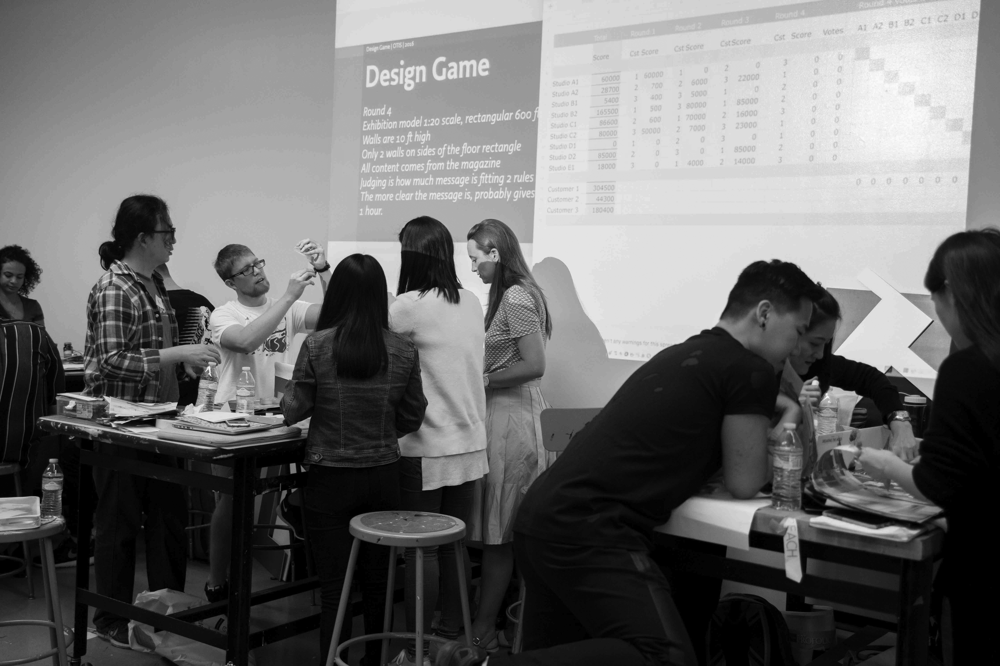

cid = 'Website'
from pagebot.publications import Website
doc = Website(autoPages=0, title='Design Design Space')
page = doc.newPage(title='Home', name='index.html', template='home')
page.info.cssPath = 'sources/pagebot.css'
doc.footerHtml = """Let us know what you think. Do you have any questions for us? buro@petr.com
"""
# H O M E
box = page['Introduction']
What are the dreams and dragons in your design process? How do you change a plan into a planning and mistakes into treasures? Where can you find the design space to develop?
box = page['Featured']['Image']

box = page['Featured']['Side']
Repeat to improve
What makes a design proces fundamentally different from a production process, is that repetition improves the result. Starting with quick sketches, ignoring most details, next steps take more time. It’s not a lineair process, it’s a iterative process, which means repeating the previous step in more detail.
box = page['Main']['Content']
Design Design Space
What is it?
Design Design Space is an online coaching environment to develop your design skills. Query your questions and improve your sketching. Acquire new techniques and research your presentations. In short, a space where you can design your design process.
What kind of challenges do you experience in your daily work as a designer?
Working closely together online with experienced designers and a group of collegue students, there is space to define your own study topics and challenges. In fact, such a selection and planning process is an integral part of the study itself. You tell us what you want, and together we’ll find a way to get there.
How much time do you need?
The core idea behind designing the design process, is that it doesn’t make a difference for how long you do it. A project of 1 hour, basically goes through the same stages (research – design – presentation) as a project of 1 year. Where in practice 80% of the work is done in the last 20% (or less) of the available time.
Of course, it matters how long you study. the stadia in the design process are fundamentally the same. Depending on the lenght of time, their will be more details to focus and to work on.
This mismatch – how time is spent on what – is fundamental to design. Too optimistic in the beginning (“the next one always will be better”), a design is never finished. But in the mean time, the fact that most designs are supposed to meet external requirements, the final deadline defines the quality of the result, not the opinion of the designer.
1 day • 1 week • 1 month • 1 season • 1 year
Study path lengths range from 1 day, 1 week, 1 month, 1 season and possibly 1 year, whatever fits best to your plans, your practical possibilities and your financial situation.
What does it cost?
- 1 day $150
- 1 week $900 (7 days)
- 1 month $1.900 (calendar month)
- 1 season $3.900 (3 calendar months)
- 1 year $7.900
Discount or split payment for the month, season and year training can be discussed, depending on your personal situation.
Students who whish to extend one training level into another, a 50% discount applies to previous payed tuition. E.g 1 day followed by 1 week: 1/2 $150 + $900 = $975. Or 1 week followed by 1 month: 1/2 $900 + $1.900 = $2.350. Or 1 week followed by 1 season: 1/2 $900 + $3.900 = $4.350
Pricing is for individual designers. For corporate trainings or groups, please contact us.
What is the schedule & how to submit?
Every 6 months, in March and September, a new day-week-month-season-year sequence starts, most likely if there are at least 3 participating students.
Day-week sequences or single day Design Games can take place on other dates during the year, if the amount of participants makes it possible.
Since working as a team of students a minimum amount of 3 is required, and also a mininum level of quality, motivation, dedication and experience.
Season and year-students are submitted after showing their portfolios and the result of a given assignment. Also they are asked to write a motivation and development plan.
Students finishing a training adequately, automatically get accepted for a next.
 Design Game on location at OTIS College of Art and Design. Although the online training obviously doesn’t include this direct way of working together, it is the aim to offer the best possible online design space, using the latest technology.
box = page['Main']['Side']
 What does your design profession look like 5 years from now? Or 20? Will your current skill set still be sufficient? How to make yourself independent from the changes in design that are likely to happen? Or better, how can you use them to our advantage? Read what Design Design Space has to offer.
What does your design profession look like 5 years from now? Or 20? Will your current skill set still be sufficient? How to make yourself independent from the changes in design that are likely to happen? Or better, how can you use them to our advantage? Read what Design Design Space has to offer.